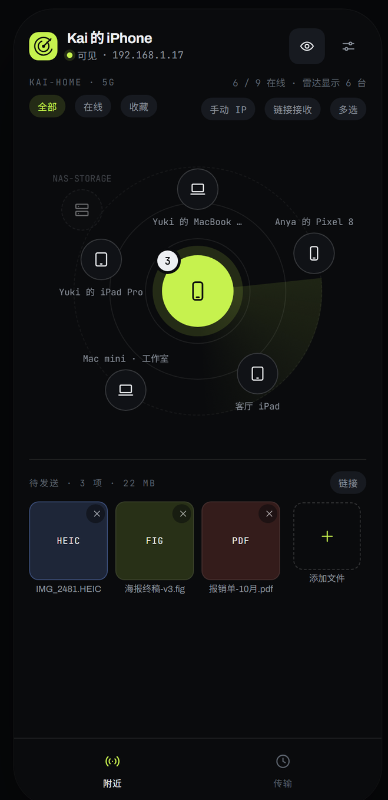

不联网也能用
只在局域网内通信。断网、隔离网、没有外网出口的环境照样能传 —— 它从不向互联网发起请求。
Local-first transfer · 协议 v2
同一网络下自动发现附近的设备，点一下就开始传。没有账号、没有上传、没有大小限制 —— 文件从一台设备直接到另一台。
界面
不用输 IP，不用扫码。同网段的设备会出现在雷达上，远的自动收进列表。

对方什么都不用装 —— 用浏览器打开一个链接就能收。
为什么用它
只在局域网内通信。断网、隔离网、没有外网出口的环境照样能传 —— 它从不向互联网发起请求。
实现 LocalSend 协议 v2，可以和任意安装了原版 LocalSend 的设备互传，不必全部换成 Sonar。
每个设备自签证书，连接时双向校验。设备身份是证书的 SHA-256 指纹，不是对方自报的名字。
开启「链接接收」后，对方用浏览器打开一个网页就能下载文件 —— 手机、平板、老电脑都行。
怎么用
连接到同一个 Wi-Fi 或网线。没有局域网？热点直连也可以。
附近的设备会自己出现。点它的名字，或者直接拖文件过去。
接收方确认后开始传输。大文件有进度和速度，随时可以取消。
平台
任意两个平台之间都能互传，不挑配对。
技术
服务端与客户端都是 Rust 实现，协议 v2。界面只做事件处理，重活不在主线程。
UDP 多播广播，每个网络接口一个 socket；IPv6 也支持。回应走 HTTP 单播回去。
设备自签证书，强制校验客户端证书。指纹不一致的注册包直接丢弃。
Apache-2.0。上游是 LocalSend，本仓库是个人维护的 fork。
常见问题
这个 fork 目前还没有发布现成的安装包。想现在就用，可以自己构建：
git clone https://github.com/zephyr-qu/sonar
cd sonar/app
fvm flutter pub get
fvm flutter build windows